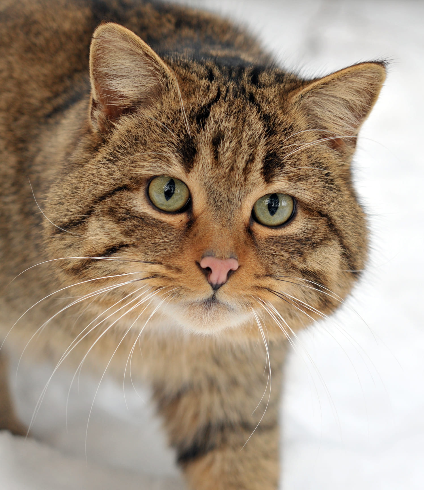

Felis silvestris
da família FelidaeO gato selvagem (nome científico: Felis silvestris), também conhecido como gato-cabeçana ou gato-montês, é um pequeno felídeo do gênero Felis, natural da Europa, África e Ásia. A espécie é bastante versátil e ocupa habitats diversificados como savanas, florestas e estepes.
O gato-doméstico evoluiu a partir do gato selvagem e é considerado como sua sub-espécie (Felis silvestris catus).
O gato selvagem é um carnívoro de médio porte, semelhante aos gatos-domésticos, porém mais robusto. A cabeça é grande e arredondada, com um focinho curto e poderosas mandíbulas. Os olhos são geralmente verdes. As patas são curtas e fortes. A pelagem é acastanhada e/ou acinzentada, o que permite camuflar-se no seu ambiente.
A principal característica distintiva é a sua cauda grossa e de aspecto tufado, que apresenta 3 a 5 anéis pretos, largos e bem espaçados, terminando numa ponta negra arredondada. O corpo também tem riscas ao longo dos flancos e patas. Ao contrário de muitos gatos-domésticos, a pelagem do gato-selvagem não tem pintas.
“Sua passagem sem esforço entre os mundos selvagem e doméstico sugere o tipo de graça de que precisamos, como espécie, para nos movermos entre a natureza e a cultura”
- Estado de conservação: Estável
- Ordem: Carnivora
- Gênero: Felis
- Idade Média: 15 anos
- Macho adulto: 5kg
- Fêmea adulta: 3,5kg
Os machos têm entre 52 e 65 cm de comprimento e pesam em média 5 kg (máximo 7 kg), enquanto as fêmeas medem entre 48 e 57 cm e pesam cerca de 3,5 kg. O peso dos animais varia sazonalmente.
O gato-selvagem habita preferencialmente bosques fechados, mas também ocorrem em matagais mediterrâneos e florestas de coníferas. Durante o dia podem refugiar-se em buracos de árvores, fendas nas rochas ou tocas abandonadas de outros animais.